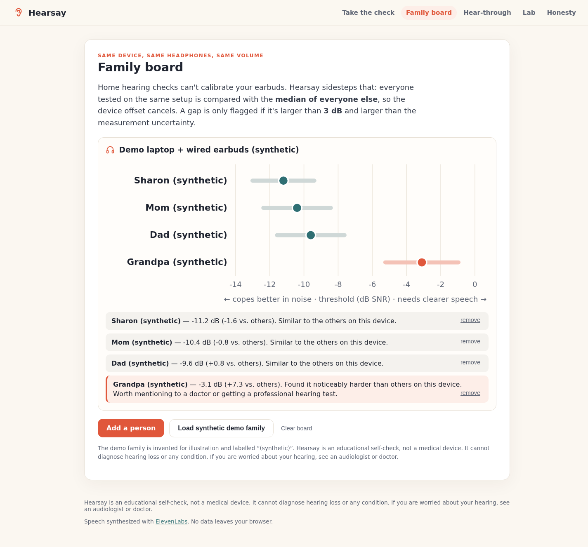
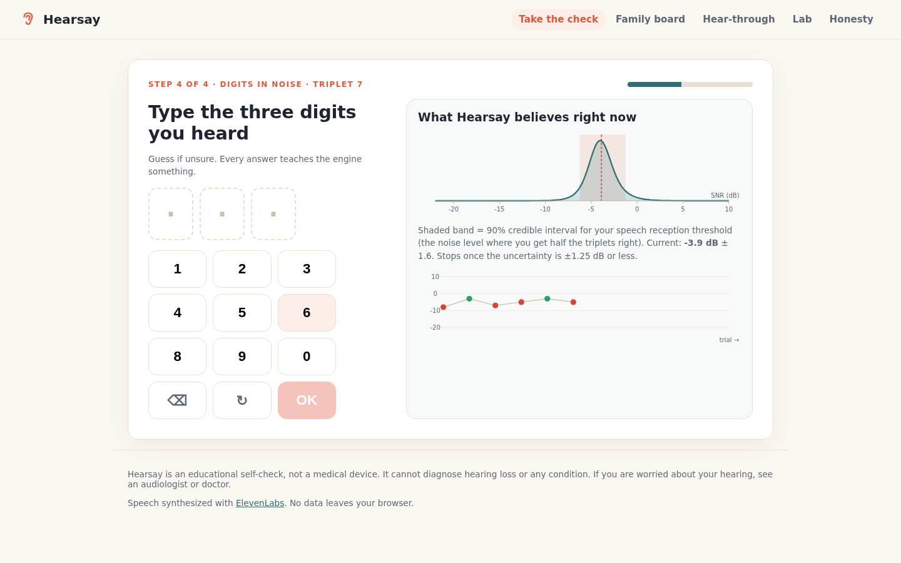

Understanding speech in noise is often the first hearing ability to slip, and people often wait years before acting. Online hearing tests usually skip speech-in-noise, and they can't know how loud your headphones are — yet many still report a "normal" range.
Families and caregivers of older adults, and students exposed to loud music. The output is actionable and non-alarming: "found it noticeably harder than others on this device — worth mentioning to a doctor."
| Procedure | Triplets | RMSE | 90% CI coverage |
|---|---|---|---|
| Staircase, 24 trials | 24 | 0.79 dB | 62% |
| Staircase, 12 trials | 12 | 1.53 dB | 54% |
| Hearsay Bayesian | 11.8 | 1.01 dB | 94% |
~34% lower error than a staircase of the same length; half the trials of the classic track, which remains slightly more precise.


TypeScript, Vite, Web Audio API, hand-written FFT, Vitest (32 tests). No backend; results stay in the browser.
Not a medical device; not a diagnosis; not clinically validated. Validation uses simulated listeners only. Demo family is invented and labelled. Speech synthesized with ElevenLabs TTS; noise generated locally. No human-subject data. Planned next: ethics-approved pilot against a calibrated clinical test.